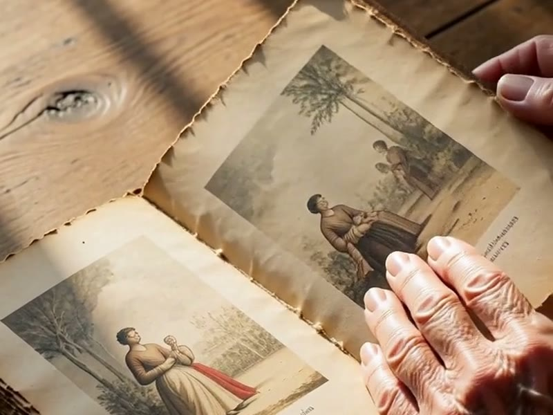
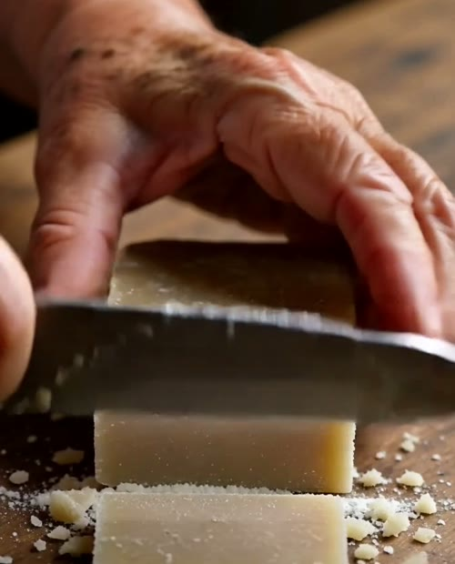
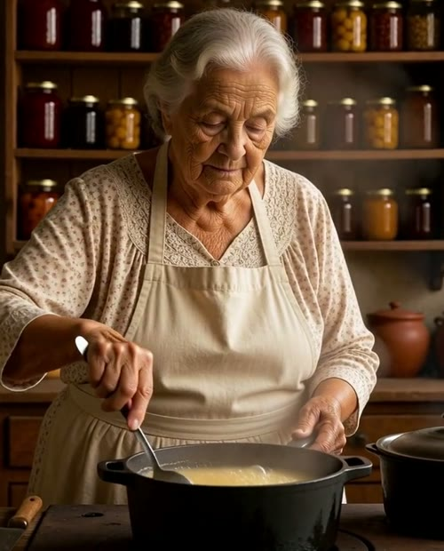
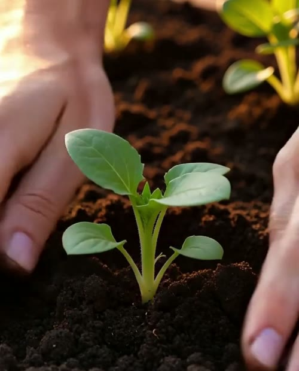
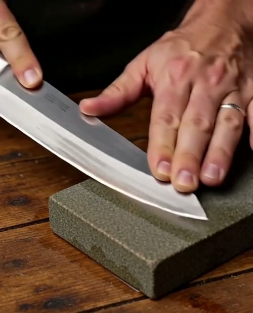
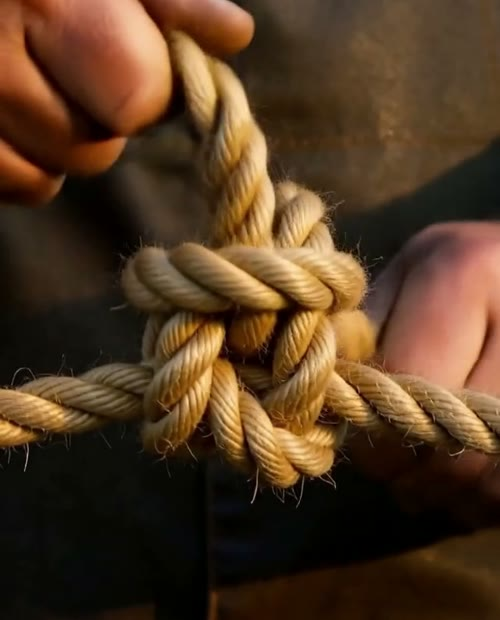
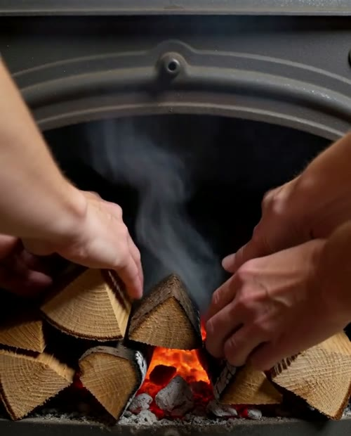
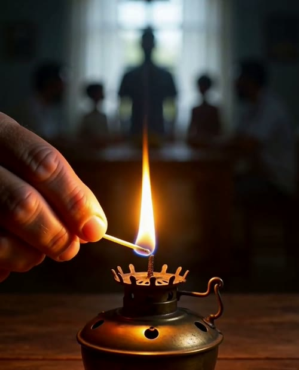

O que seus avós sabiam fazer e ninguém te ensinou.
200 saberes antigos, passo a passo, em um livro ilustrado. Do sabão em barra ao que fazer quando falta luz, água ou dinheiro.
Quero o livroA verdade
A nossa geração não sabe trocar uma torneira.
Nossos avós faziam sabão, guardavam comida sem geladeira, consertavam quase tudo e se viravam sem luz. Isso passava de avó para neta, na beira do fogão.
Hoje, quando a luz acaba, a geladeira para ou o dinheiro aperta, quase ninguém sabe o que fazer.
E no dia em que eles se forem, esse conhecimento vai junto. Se ninguém anotar, acabou.
O livro
Todo esse conhecimento, em um lugar só.
Um saber por dia, em poucos minutos. Cada um traz a lista do que precisa e o passo a passo, em linguagem de gente simples.







Arraste para o lado.
O que tem dentro
200 saberes, em 10 capítulos
- Casa e limpezaSabão em barra, vinagre de limpeza, tirar mancha, espantar traça.25
- Cozinha da roça e conservasConserva, defumado, carne na banha, pão de fermento natural.30
- Horta e quintalCompostagem, muda, adubo caseiro, guardar semente.25
- Consertos em casaTorneira pingando, tomada, reboco, porta que arrasta.25
- Ferramentas e madeiraAfiar faca na pedra, cabo de enxada, encaixe simples.15
- Nós e cordasNós que não soltam, amarrar carga, emendar corda.15
- Fogo, lenha e fogãoAcender com lenha molhada, fogão improvisado, guardar brasa.15
- Água e luz quando faltaTornar a água segura, guardar água, lamparina, geladeira sem luz.20
- Emergências e primeiros cuidadosQueimadura, corte, engasgo, o que deixar pronto em casa.15
- Animais e criaçãoGalinheiro, ninho, cuidar de pinto, afastar praga sem veneno.15
Veja com os seus olhos
Três saberes do livro
Saber nº 1
O ovo ainda presta?
Coloque o ovo num copo com água. Afundou e ficou deitado, está fresco. Ficou em pé no fundo, use logo. Boiou, jogue fora.
Saber nº 2
Água segura quando falta a tratada
Coe a água num pano limpo. Ferva por pelo menos 1 minuto depois que levantar fervura. Deixe esfriar coberta e guarde em recipiente limpo e tampado.
Saber nº 3
Geladeira sem cheiro ruim
Deixe um pires com bicarbonato de sódio em uma prateleira. Troque a cada 3 meses.
O que oferece risco, como a soda cáustica do sabão, vem com alerta de segurança.
O que muda
Quando você sabe fazer:
- Falta luz ou água e você não entra em pânico
- Conserta em casa o que antes pagava para consertar
- Gasta menos no mercado
- Ensina aos filhos o que ninguém mais ensina
Como funciona
3 passos
- Receba o livro no e-mailLogo depois do pagamento.
- Leia no celular ou imprimaÉ um PDF. Você decide.
- Faça um saber por diaPoucos minutos, com o que tem em casa.
Presente de Natal
Para o pai que gosta de consertar. Para a avó que vai reconhecer cada receita.
E para o filho que nunca aprendeu.
Tudo o que você recebe
Hoje, no seu e-mail:
- Livro dos Saberes Esquecidos200 saberes passo a passo, em 10 capítulos ilustrados.
- Bônus 1: Lista da Falta de Luz e ÁguaO que deixar pronto em casa antes de precisar.
- Bônus 2: Caderno da FamíliaPara anotar os saberes dos seus avós antes que se percam.
- Bônus 3: Versão para imprimirPara encadernar ou dar de presente.
Tudo isso, uma vez só:
R$ 37
Menos de R$ 0,20 por saber. Sem mensalidade.
Comprar agoraLivro digital em PDF. Pagamento por Pix ou cartão.
O risco é todo nosso
Leia por 30 dias. Se achar que não valeu, devolvemos 100% do seu dinheiro. Sem pergunta e sem enrolação.
Sendo direto
Isso não é para todo mundo
Se você acha que sempre vai ter aplicativo, entrega e luz, não compre.
Mas se você quer ser a pessoa que sabe o que fazer, é aqui que começa.
Quando eles se forem, isso vai junto.
Quero o livro por R$ 37Perguntas rápidas
É um livro físico?
Não. É um PDF. Você pode ler no celular ou imprimir.
Como recebo?
O acesso chega no e-mail logo depois do pagamento.
Preciso ter sítio ou roça?
Não. A maioria dos saberes é para fazer em casa, com o que você já tem.
Tem remédio caseiro?
O livro ensina primeiros cuidados, sem prometer cura. Em caso de doença, procure um médico.
E se eu não gostar?
Devolvemos tudo em até 30 dias.